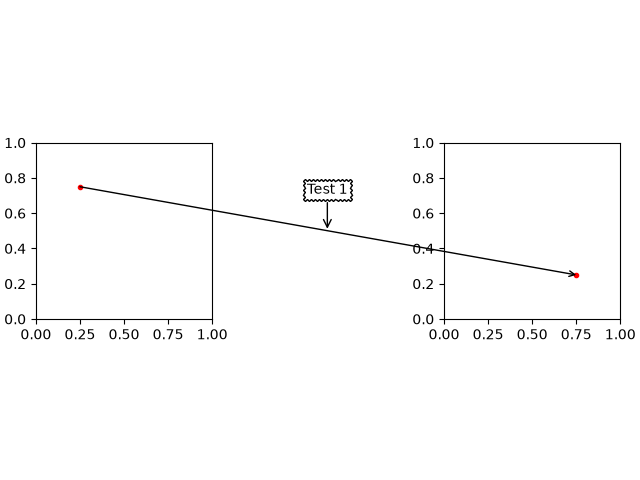
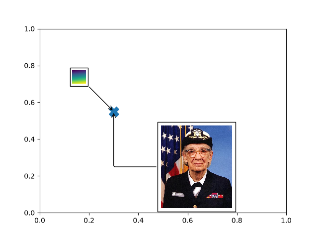
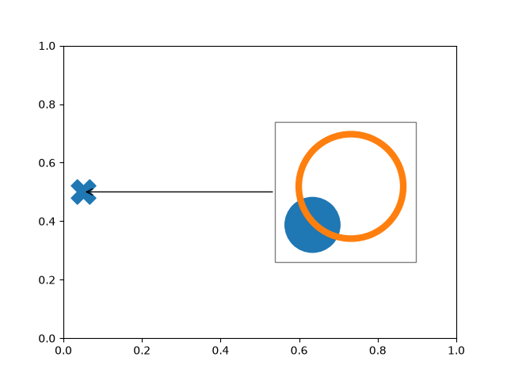

Note
Go to the end to download the full example code.
Artists as annotations#
AnnotationBbox facilitates using arbitrary artists as annotations, i.e. data at
position xy is annotated by a box containing an artist at position xybox. The
coordinate systems for these points are set via the xycoords and boxcoords
parameters, respectively; see the xycoords and textcoords parameters of
Axes.annotate for a full listing of supported coordinate systems.
The box containing the artist is a subclass of OffsetBox, which is a container
artist for positioning an artist relative to a parent artist.
from pathlib import Path
import PIL
import matplotlib.pyplot as plt
import numpy as np
from matplotlib import get_data_path
from matplotlib.offsetbox import AnnotationBbox, DrawingArea, OffsetImage, TextArea
from matplotlib.patches import Annulus, Circle, ConnectionPatch
Text#
AnnotationBbox supports positioning annotations relative to data, Artists, and
callables, as described in Annotations. The TextArea is used to create a
textbox that is not explicitly attached to an axes, which allows it to be used for
annotating figure objects. When annotating an axes element (such as a plot) with text,
use Axes.annotate because it will create the text artist for you.
fig, axd = plt.subplot_mosaic([['t1', '.', 't2']], layout='compressed')
# Define a 1st position to annotate (display it with a marker)
xy1 = (.25, .75)
xy2 = (.75, .25)
axd['t1'].plot(*xy1, ".r")
axd['t2'].plot(*xy2, ".r")
axd['t1'].set(xlim=(0, 1), ylim=(0, 1), aspect='equal')
axd['t2'].set(xlim=(0, 1), ylim=(0, 1), aspect='equal')
# Draw a connection patch arrow between the points
c = ConnectionPatch(xyA=xy1, xyB=xy2,
coordsA=axd['t1'].transData, coordsB=axd['t2'].transData,
arrowstyle='->')
fig.add_artist(c)
# Annotate the ConnectionPatch position ('Test 1')
offsetbox = TextArea("Test 1")
# place the annotation above the midpoint of c
ab1 = AnnotationBbox(offsetbox,
xy=(.5, .5),
xybox=(0, 30),
xycoords=c,
boxcoords="offset points",
arrowprops=dict(arrowstyle="->"),
bboxprops=dict(boxstyle="sawtooth"))
fig.add_artist(ab1)

Images#
The OffsetImage container facilitates using images as annotations
fig, ax = plt.subplots()
# Define a position to annotate
xy = (0.3, 0.55)
ax.scatter(*xy, s=200, marker='X')
# Annotate a position with an image generated from an array of pixels
arr = np.arange(100).reshape((10, 10))
im = OffsetImage(arr, zoom=2, cmap='viridis')
im.image.axes = ax
# place the image NW of xy
ab = AnnotationBbox(im, xy=xy,
xybox=(-50., 50.),
xycoords='data',
boxcoords="offset points",
pad=0.3,
arrowprops=dict(arrowstyle="->"))
ax.add_artist(ab)
# Annotate the position with an image from file (a Grace Hopper portrait)
img_fp = Path(get_data_path(), "sample_data", "grace_hopper.jpg")
with PIL.Image.open(img_fp) as arr_img:
imagebox = OffsetImage(arr_img, zoom=0.2)
imagebox.image.axes = ax
# place the image SE of xy
ab = AnnotationBbox(imagebox, xy=xy,
xybox=(120., -80.),
xycoords='data',
boxcoords="offset points",
pad=0.5,
arrowprops=dict(
arrowstyle="->",
connectionstyle="angle,angleA=0,angleB=90,rad=3")
)
ax.add_artist(ab)
# Fix the display limits to see everything
ax.set(xlim=(0, 1), ylim=(0, 1))
plt.show()

Arbitrary Artists#
Multiple and arbitrary artists can be placed inside a DrawingArea.
# make this the thumbnail image
fig, ax = plt.subplots()
# Define a position to annotate
xy = (0.05, 0.5)
ax.scatter(*xy, s=500, marker='X')
# Annotate the position with a circle and annulus
da = DrawingArea(120, 120)
p = Circle((30, 30), 25, color='C0')
da.add_artist(p)
q = Annulus((65, 65), 50, 5, color='C1')
da.add_artist(q)
# Use the drawing area as an annotation
ab = AnnotationBbox(da, xy=xy,
xybox=(.55, xy[1]),
xycoords='data',
boxcoords=("axes fraction", "data"),
box_alignment=(0, 0.5),
arrowprops=dict(arrowstyle="->"),
bboxprops=dict(alpha=0.5))
ax.add_artist(ab)
# Fix the display limits to see everything
ax.set(xlim=(0, 1), ylim=(0, 1))
plt.show()

References
The use of the following functions, methods, classes and modules is shown in this example: